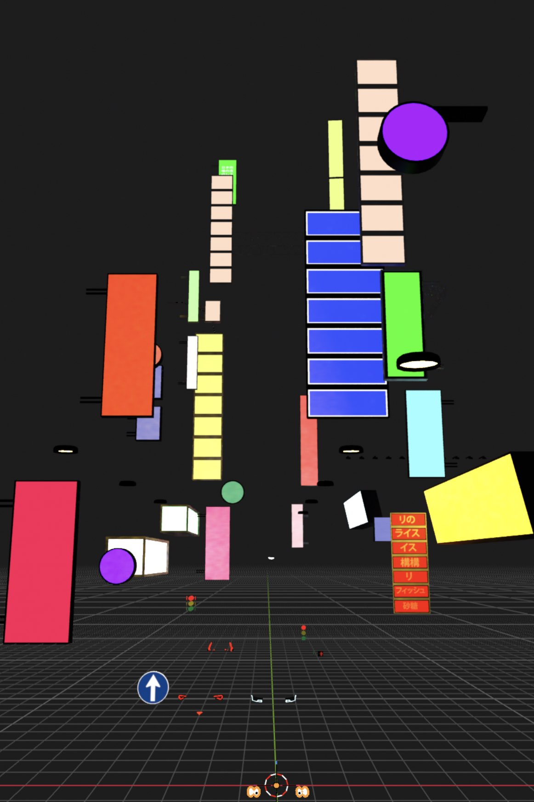
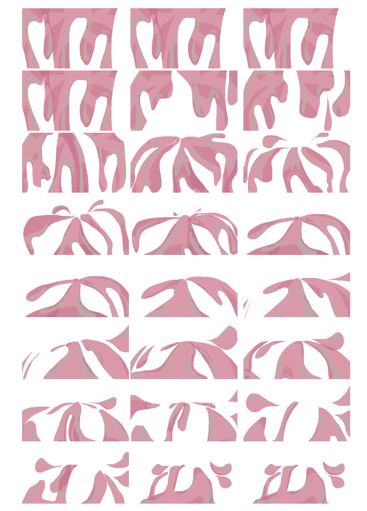

WELCOME TO THE MACHINE
This 3D puzzle adventure game concept utilizes a surrealist art direction to explore themes of institutional conformity and urban isolation. The narrative follows an anomalous protagonist attempting to break free from the oppressive, cyclical routines of a monolithic city system. Players must solve puzzles to navigate through the game. The concept art establishes a clear visual trajectory, transitioning from the vibrant, chaotic isolation of neon cityscapes into the overexposed, sterile, and fragmented architecture of the corporate sector.





ADVENTURE PUZZLE GAME CONCEPT


PHYSICAL
This mobile runner developed as an educational tribute to human biology, this mobile runner prototype takes players on a visceral, miniaturized journey through the body. The visual direction draws conceptual inspiration from the classic animation Once Upon a Time... Life, combining 1980s airbrush aesthetics with a thorough study of microscopic organ anatomy. The introductory level, "The Tongue," introduces the core gameplay loop: players must navigate a textured, organic landscape, evading sharp hazards and gathering essential nutrients before transitioning into the throat sequence.


This turn-based combat game concept details the character design and animation centered around unconventional warfare. Offering a humanistic take on daily situations, the game replaces physical violence with mental debates and social power games. Utilizing a distinct cel-shaded 2D aesthetic, the visual direction draws heavily from personal experience in the fashion industry, bringing functional styling to the garments. The result is a unique integration of high-fashion sensibilities with classic gaming aesthetics.
HERO WORSHIP


